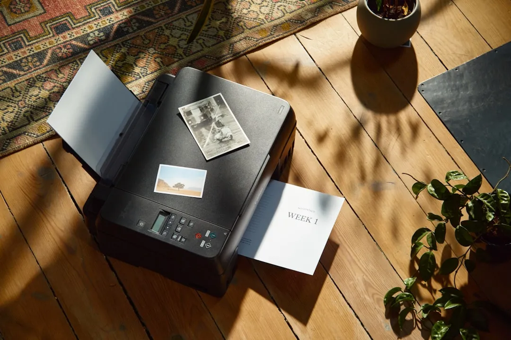

Bảo trì máy in định kỳ là yếu tố then chốt để đảm bảo thiết bị của bạn hoạt động ổn định, cho ra bản in chất lượng và kéo dài tuổi thọ.
Nhiều doanh nghiệp thường bỏ qua việc này, chỉ gọi kỹ thuật khi máy đã hỏng. Điều này không chỉ gây gián đoạn công việc mà còn tốn kém chi phí sửa chữa. Thay vào đó, chỉ với 7 bước đơn giản sau đây, bạn có thể tự mình "chăm sóc" chiếc máy in của mình ngay tại văn phòng.
1. Vệ sinh bên ngoài thường xuyên
Bụi bẩn là kẻ thù số một. Sử dụng một chiếc khăn mềm, ẩm (không ướt) để lau sạch bụi bẩn bám trên vỏ máy, khay giấy và các khe hở. Đừng bao giờ sử dụng cồn hoặc dung môi mạnh vì chúng có thể làm hỏng bề mặt nhựa.
2. Dọn dẹp bên trong máy
Tắt nguồn và rút phích cắm máy in. Mở nắp máy và cẩn thận lấy hộp mực (cartridge) ra. Sử dụng máy hút bụi mini hoặc bình xịt khí nén để loại bỏ bụi giấy, mực vương vãi và các vật thể lạ (như ghim kẹp) bên trong máy.
3. Kiểm tra và làm sạch trục kéo giấy (Roller)
Trục kéo giấy bẩn hoặc mòn là nguyên nhân chính gây kẹt giấy. Dùng một miếng vải sạch thấm một chút cồn isopropyl (cồn y tế) để lau nhẹ các con lăn cao su. Điều này giúp phục hồi độ bám và kéo giấy tốt hơn.
Trích dẫn: "Một máy in được cập nhật firmware đầy đủ có thể giảm đến 30% nguy cơ lỗi vặt liên quan đến kết nối." - Chuyên gia từ PaperCraft.
4. Cập nhật Firmware/Driver
Các nhà sản xuất (như HP, Canon, Brother) thường xuyên phát hành các bản cập nhật phần mềm (firmware) để sửa lỗi và cải thiện hiệu suất. Hãy truy cập trang web của hãng để tải về và cài đặt phiên bản mới nhất cho máy in của bạn.
- Lỗi kết nối Wi-Fi.
- Vấn đề tương thích với hệ điều hành mới.
- Tối ưu hóa tốc độ in.
5. Sử dụng mực và giấy chính hãng
Đây là điều chúng tôi không thể không nhấn mạnh. Sử dụng mực in giả, kém chất lượng có thể làm hỏng đầu phun và các bộ phận bên trong. Giấy quá mỏng hoặc quá dày (không đúng khuyến cáo) cũng dễ gây kẹt giấy.